library(sf)
library(tidyverse) Operaciones SF
Importacion de librerias
Importación de los archivos vectoriales en formato shapefile
poligonos <- read_sf('data/Poligonos.shp')
lineas <- read_sf('data/Lineas.shp')
puntos <- read_sf('data/Puntos.shp')1. Extracción de información
a. Sistema de Coordenadas de Referencia (CRS)
ST_CRS
Devuelve un objeto tipo CRS con información del sistema de coordendas del objeto SF.
st_crs(poligonos)Coordinate Reference System:
User input: WGS 84 / UTM zone 18S
wkt:
PROJCRS["WGS 84 / UTM zone 18S",
BASEGEOGCRS["WGS 84",
DATUM["World Geodetic System 1984",
ELLIPSOID["WGS 84",6378137,298.257223563,
LENGTHUNIT["metre",1]]],
PRIMEM["Greenwich",0,
ANGLEUNIT["degree",0.0174532925199433]],
ID["EPSG",4326]],
CONVERSION["UTM zone 18S",
METHOD["Transverse Mercator",
ID["EPSG",9807]],
PARAMETER["Latitude of natural origin",0,
ANGLEUNIT["Degree",0.0174532925199433],
ID["EPSG",8801]],
PARAMETER["Longitude of natural origin",-75,
ANGLEUNIT["Degree",0.0174532925199433],
ID["EPSG",8802]],
PARAMETER["Scale factor at natural origin",0.9996,
SCALEUNIT["unity",1],
ID["EPSG",8805]],
PARAMETER["False easting",500000,
LENGTHUNIT["metre",1],
ID["EPSG",8806]],
PARAMETER["False northing",10000000,
LENGTHUNIT["metre",1],
ID["EPSG",8807]]],
CS[Cartesian,2],
AXIS["(E)",east,
ORDER[1],
LENGTHUNIT["metre",1]],
AXIS["(N)",north,
ORDER[2],
LENGTHUNIT["metre",1]],
ID["EPSG",32718]]class(st_crs(poligonos))[1] "crs"Nombre del Sistema de Referencia de Coordendas.
st_crs(poligonos)$input[1] "WGS 84 / UTM zone 18S"Código EPSG.
st_crs(poligonos)$epsg[1] 32718Unidad del sistema de coordenadas.
st_crs(poligonos)$units_gdal[1] "metre"Informacion de la proyección.
st_crs(poligonos)$proj4string[1] "+proj=utm +zone=18 +south +datum=WGS84 +units=m +no_defs"Informacion en formato WKT (Well-Known Text).
st_crs(poligonos)$wkt[1] "PROJCRS[\"WGS 84 / UTM zone 18S\",\n BASEGEOGCRS[\"WGS 84\",\n DATUM[\"World Geodetic System 1984\",\n ELLIPSOID[\"WGS 84\",6378137,298.257223563,\n LENGTHUNIT[\"metre\",1]]],\n PRIMEM[\"Greenwich\",0,\n ANGLEUNIT[\"degree\",0.0174532925199433]],\n ID[\"EPSG\",4326]],\n CONVERSION[\"UTM zone 18S\",\n METHOD[\"Transverse Mercator\",\n ID[\"EPSG\",9807]],\n PARAMETER[\"Latitude of natural origin\",0,\n ANGLEUNIT[\"Degree\",0.0174532925199433],\n ID[\"EPSG\",8801]],\n PARAMETER[\"Longitude of natural origin\",-75,\n ANGLEUNIT[\"Degree\",0.0174532925199433],\n ID[\"EPSG\",8802]],\n PARAMETER[\"Scale factor at natural origin\",0.9996,\n SCALEUNIT[\"unity\",1],\n ID[\"EPSG\",8805]],\n PARAMETER[\"False easting\",500000,\n LENGTHUNIT[\"metre\",1],\n ID[\"EPSG\",8806]],\n PARAMETER[\"False northing\",10000000,\n LENGTHUNIT[\"metre\",1],\n ID[\"EPSG\",8807]]],\n CS[Cartesian,2],\n AXIS[\"(E)\",east,\n ORDER[1],\n LENGTHUNIT[\"metre\",1]],\n AXIS[\"(N)\",north,\n ORDER[2],\n LENGTHUNIT[\"metre\",1]],\n ID[\"EPSG\",32718]]"b. Coordenadas
ST_COORDINATES
Devuelve una matriz con las coordendas (X e Y) de cada uno de los vértices de las geometrías.
st_coordinates(poligonos) X Y L1 L2
[1,] 677159.6 8470790 1 1
[2,] 678593.3 8473273 1 1
[3,] 680027.0 8470790 1 1
[4,] 677159.6 8470790 1 1
[5,] 674144.9 8471479 1 2
[6,] 676144.9 8471479 1 2
[7,] 676144.9 8469479 1 2
[8,] 674144.9 8469479 1 2
[9,] 674144.9 8471479 1 2
[10,] 674968.0 8469981 1 3
[11,] 679647.6 8469981 1 3
[12,] 679647.6 8468463 1 3
[13,] 674968.0 8468463 1 3
[14,] 674968.0 8469981 1 3
[15,] 680942.4 8469776 1 4
[16,] 680942.4 8471314 1 4
[17,] 682274.1 8472083 1 4
[18,] 683605.9 8471314 1 4
[19,] 683605.9 8469776 1 4
[20,] 682274.1 8469007 1 4
[21,] 680942.4 8469776 1 4ggplot() +
geom_sf(data = poligonos) +
geom_point(data = st_coordinates(poligonos),
aes(x = X, y = Y),
size = 2,
color = "red") +
theme(axis.title = element_blank())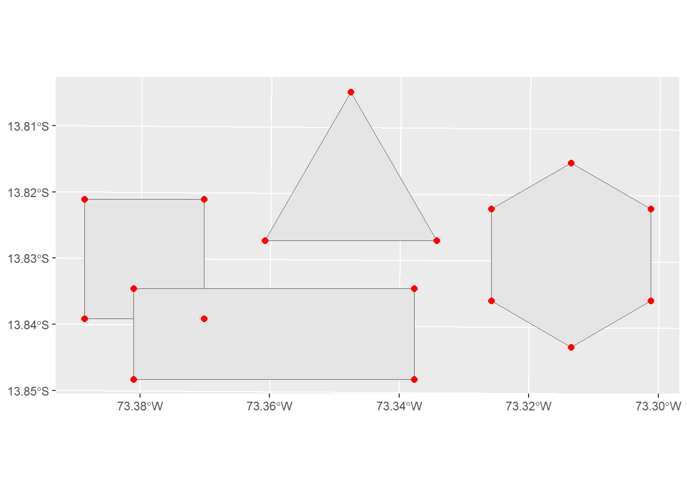
2. Operaciones con geometrías
a. Centroide
ST_CENTROID
Genera puntos que representan el centro geométrico.
st_coordinates(st_centroid(poligonos)) X Y
[1,] 678593.3 8471618
[2,] 675144.9 8470479
[3,] 677307.8 8469222
[4,] 682274.1 8470545ggplot() +
geom_sf(data = poligonos) +
geom_point(data = st_coordinates(st_centroid(poligonos)),
aes(x = X, y = Y),
size = 2,
color = "red") +
theme(axis.title = element_blank())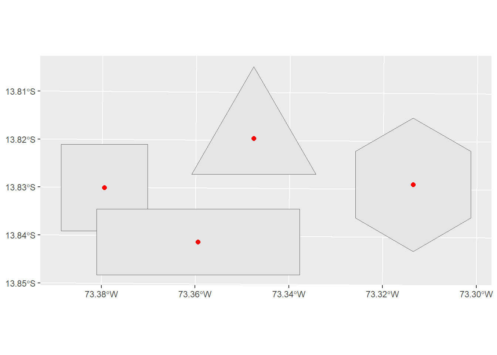
b. Buffer
ST_BUFFER
Genera un polígono que envuelve a la geometría seleccionada a una distancia (dist) determinada.
poligonos_buffer <- st_buffer(poligonos, dist = 200)ggplot() +
geom_sf(data = poligonos) +
geom_sf(data = poligonos_buffer, color = "red", alpha = 0.5, lwd = 1) +
theme(axis.title = element_blank())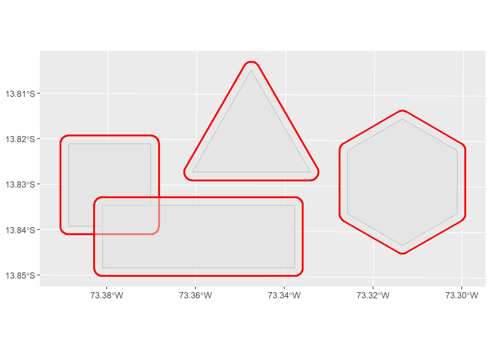
c. Contorno
ST_BOUNDARY
Genera una línea cerrada que contiene a la geometria seleccionada.
st_boundary(poligonos)$geometryGeometry set for 4 features
Geometry type: LINESTRING
Dimension: XY
Bounding box: xmin: 674144.9 ymin: 8468463 xmax: 683605.9 ymax: 8473273
Projected CRS: WGS 84 / UTM zone 18Sggplot() +
geom_sf(data = poligonos, aes(fill = Objeto)) +
geom_sf(data = st_boundary(poligonos), color = "red", lwd = 1) +
theme(axis.title = element_blank())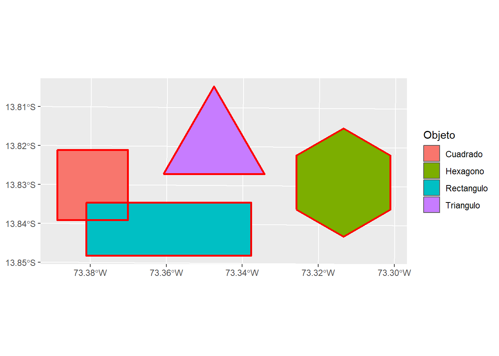
d. Intersección
ST_INTERSECTION
Se obtiene un nuevo poligono resultado de la intersección de dos poligonos.
st_intersection(poligonos[2,], poligonos[3,])Simple feature collection with 1 feature and 8 fields
Geometry type: POLYGON
Dimension: XY
Bounding box: xmin: 674968 ymin: 8469479 xmax: 676144.9 ymax: 8469981
Projected CRS: WGS 84 / UTM zone 18S
# A tibble: 1 × 9
Id Objeto Area Perimetro Id.1 Objeto.1 Area.1 Perimetro.1
* <dbl> <chr> <dbl> <dbl> <dbl> <chr> <dbl> <dbl>
1 2 Cuadrado 4 8 3 Rectangulo 7.10 12.4
# ℹ 1 more variable: geometry <POLYGON [m]>ggplot() +
geom_sf(data = poligonos[2,]) +
geom_sf(data = poligonos[3,]) +
geom_sf(data = st_intersection(poligonos[2,], poligonos[3,]), color = "red", lwd = 1) +
theme(axis.title = element_blank())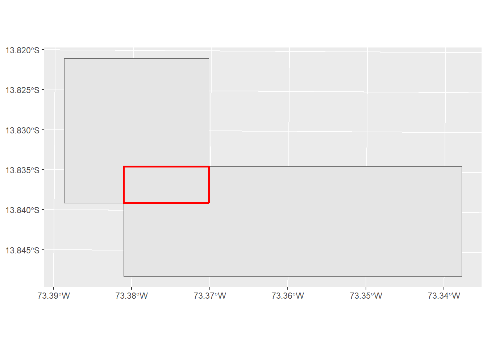
e. Diferencia
ST_DIFFERENCE
Se obtiene un nuevo poligono resultado de la diferencia del primero menos el segundo.
st_difference(poligonos[2,], poligonos[3,])Simple feature collection with 1 feature and 8 fields
Geometry type: POLYGON
Dimension: XY
Bounding box: xmin: 674144.9 ymin: 8469479 xmax: 676144.9 ymax: 8471479
Projected CRS: WGS 84 / UTM zone 18S
# A tibble: 1 × 9
Id Objeto Area Perimetro Id.1 Objeto.1 Area.1 Perimetro.1
* <dbl> <chr> <dbl> <dbl> <dbl> <chr> <dbl> <dbl>
1 2 Cuadrado 4 8 3 Rectangulo 7.10 12.4
# ℹ 1 more variable: geometry <POLYGON [m]>ggplot() +
geom_sf(data = poligonos[2,]) +
geom_sf(data = poligonos[3,]) +
geom_sf(data = st_difference(poligonos[2,], poligonos[3,]), color = "red", lwd = 1) +
geom_sf(data = st_difference(poligonos[3,], poligonos[2,]), color = "blue", lwd = 1) +
theme(axis.title = element_blank())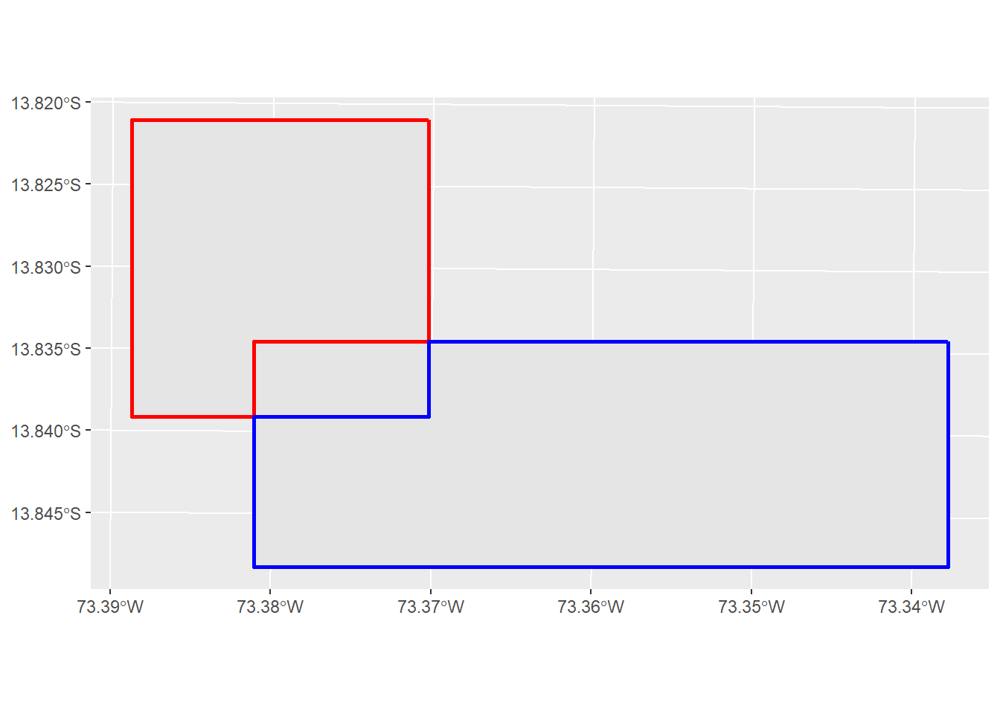
f. Unión
ST_UNION
Se obtiene un nuevo poligono resultado de la unión del primero y el segundo.
st_union(poligonos[2,], poligonos[3,])Simple feature collection with 1 feature and 8 fields
Geometry type: POLYGON
Dimension: XY
Bounding box: xmin: 674144.9 ymin: 8468463 xmax: 679647.6 ymax: 8471479
Projected CRS: WGS 84 / UTM zone 18S
# A tibble: 1 × 9
Id Objeto Area Perimetro Id.1 Objeto.1 Area.1 Perimetro.1
* <dbl> <chr> <dbl> <dbl> <dbl> <chr> <dbl> <dbl>
1 2 Cuadrado 4 8 3 Rectangulo 7.10 12.4
# ℹ 1 more variable: geometry <POLYGON [m]>ggplot() +
geom_sf(data = poligonos[2,]) +
geom_sf(data = poligonos[3,]) +
geom_sf(data = st_union(poligonos[2,], poligonos[3,]), color = "red", alpha = 0.5, lwd = 1) +
theme(axis.title = element_blank())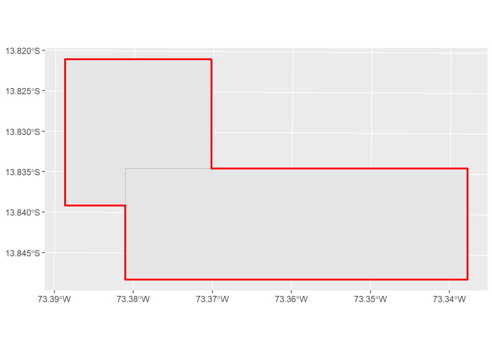
g. Convex Hull
ST_CONVEX_HULL
Se obtiene un polígono que envuelve a un conjunto de geometrías (puntos, lineas o poligonos)
st_convex_hull(st_union(puntos))Geometry set for 1 feature
Geometry type: POLYGON
Dimension: XY
Bounding box: xmin: 673391.5 ymin: 8469145 xmax: 682577.7 ymax: 8474406
Projected CRS: WGS 84 / UTM zone 18Sggplot() +
geom_sf(data = puntos, size = 3) +
geom_sf(data = st_convex_hull(st_union(puntos)), color = "red", alpha =0.5) +
theme(axis.title = element_blank())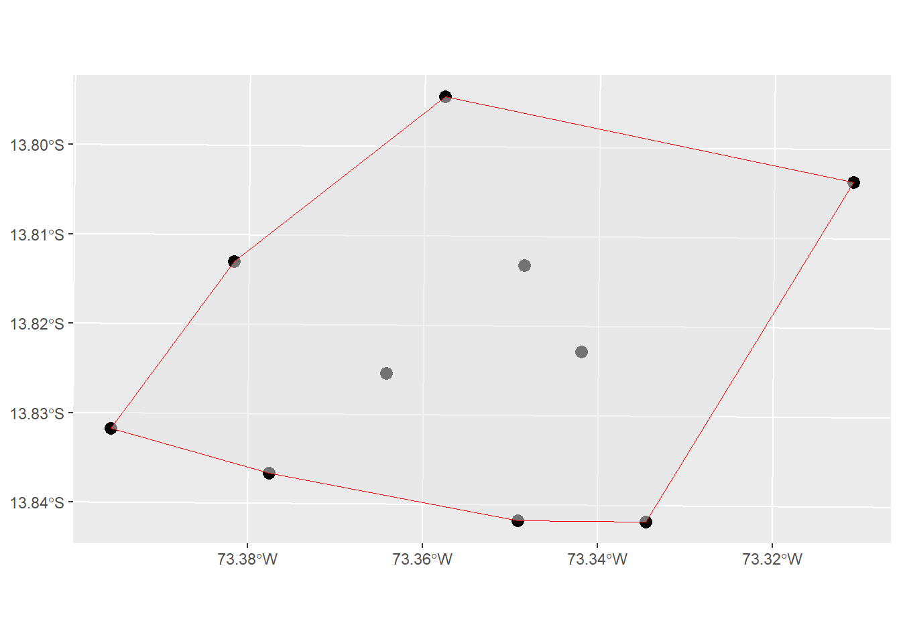
h. Grilla
ST_MAKE_GRID
Se obtiene una grilla alrededor de la geometria.
grilla_cuadrada <- st_make_grid(poligonos[1,], cellsize = 500, what = "polygons")
grilla_centroide <- st_make_grid(poligonos[1,], cellsize = 500, what = "centers")class(grilla_cuadrada)[1] "sfc_POLYGON" "sfc" class(grilla_centroide)[1] "sfc_POINT" "sfc" ggplot() +
geom_sf(data = poligonos[1,]) +
geom_sf(data = grilla_cuadrada, color = "red", alpha = 0.5) +
geom_sf(data = grilla_centroide, color = "blue", alpha = 0.5) +
theme(axis.title = element_blank())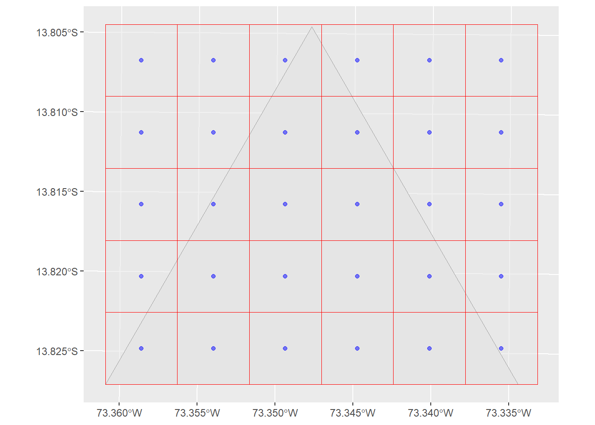
Para obtener la grilla alrededor de solamente el poligono, se puede usar la funcion de interseccion.
ggplot() +
geom_sf(data = poligonos[1,]) +
geom_sf(data = st_intersection(poligonos[1,], grilla_cuadrada), color = "red", alpha = 0.5) +
geom_sf(data = st_intersection(poligonos[1,], grilla_centroide), color = "blue", alpha = 0.5) +
theme(axis.title = element_blank())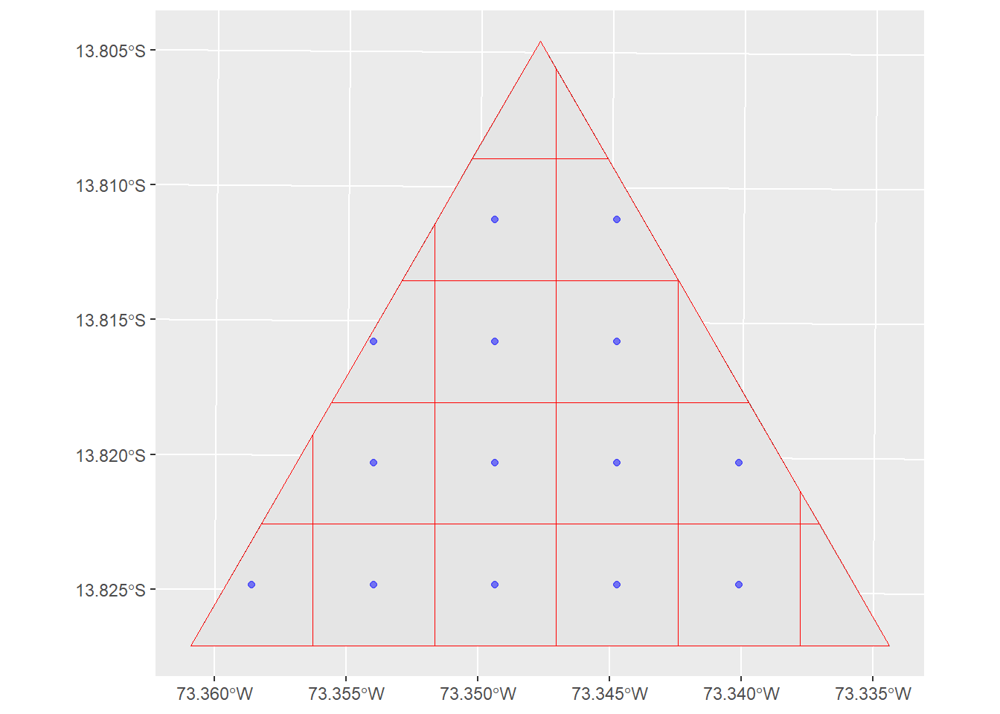
3. Medición de geometrías
Las geometrias importadas cuentan con dimensiones espaciales que pueden ser medidas.
st_set_geometry(poligonos, NULL)# A tibble: 4 × 4
Id Objeto Area Perimetro
* <dbl> <chr> <dbl> <dbl>
1 1 Triangulo 3.56 8.60
2 2 Cuadrado 4 8
3 3 Rectangulo 7.10 12.4
4 4 Hexagono 6.14 9.23st_set_geometry(lineas, NULL)# A tibble: 4 × 3
Id Objeto Longitud
* <dbl> <chr> <dbl>
1 1 Linea 1 7.51
2 2 Linea 2 5.46
3 3 Linea 3 3.40
4 4 Linea 4 7.49a. Área
ST_AREA
Devuelve el valor numérico (m²) del área de los polígonos.
st_area(poligonos)Units: [m^2]
[1] 3560391 4000000 7102500 6143870b. Perímetro
ST_PERIMETER
Devuelve el valor numérico (m) del perimetro de los poligonos.
st_perimeter(poligonos)Units: [m]
[1] 8602.403 8000.000 12394.789 9226.698c. Longitud
ST_LENGTH
Devuelve el valor numérico (m) de la longitud de las lineas.
st_length(lineas)Units: [m]
[1] 7508.036 5456.344 3399.032 7492.293d. Distancia
ST_LENGTH
Devuelve el valor numérico (m) de la distancia entre dos objetos.
# Distancia entre "Punto 1" y "Punto 2"
st_distance(puntos[1,], puntos[2,], by_element = TRUE)2329.183 [m]# Distancia entre "Punto 1" y "Linea 1"
st_distance(puntos[1,], lineas[1,], by_element = TRUE)635.2162 [m]# Distancia entre todos los elementos de "Puntos" y "Lineas"
st_distance(puntos, lineas)Units: [m]
[,1] [,2] [,3] [,4]
[1,] 635.2162 2672.3569 4866.230 6324.9573
[2,] 2019.6616 537.4906 3936.324 4741.0609
[3,] 1318.9398 3957.8853 1631.515 3729.2899
[4,] 2581.4680 798.0921 1718.414 2462.0679
[5,] 2703.7406 3390.9894 7226.407 8188.8378
[6,] 4703.5345 325.7519 2908.510 3698.8261
[7,] 5272.0000 3668.4347 2251.968 716.6541
[8,] 1371.7403 1873.0733 1787.458 2753.7596
[9,] 3257.5187 1595.2698 5810.640 6563.1728
[10,] 4000.2542 1286.7199 3651.692 4469.3941ggplot() +
geom_sf(data = puntos, color = "red") +
geom_sf(data = lineas, color = "blue") +
geom_text(data = st_set_geometry(puntos, NULL),
aes(x = c(st_coordinates(puntos)[,1]),
y = c(st_coordinates(puntos)[,2])+250,
label = Objeto),
size = 2.5) +
geom_text(data = st_set_geometry(lineas, NULL),
aes(x = c(st_coordinates(st_centroid(lineas))[,1])-600,
y = c(st_coordinates(st_centroid(lineas))[,2]),
label = Objeto),
size = 2.5) +
theme(axis.title = element_blank())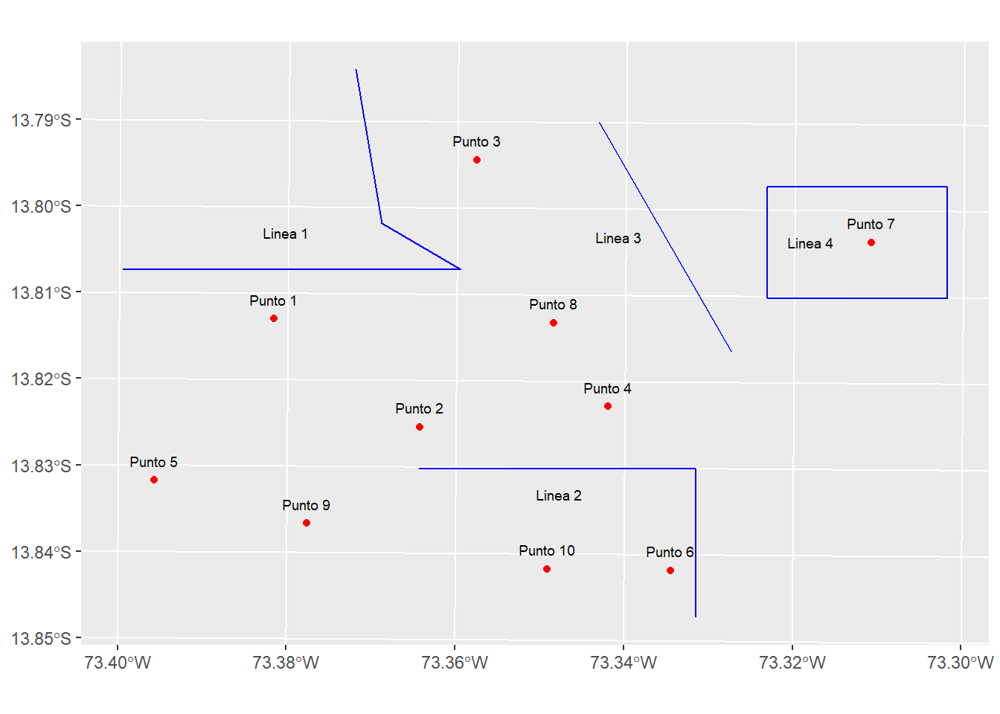